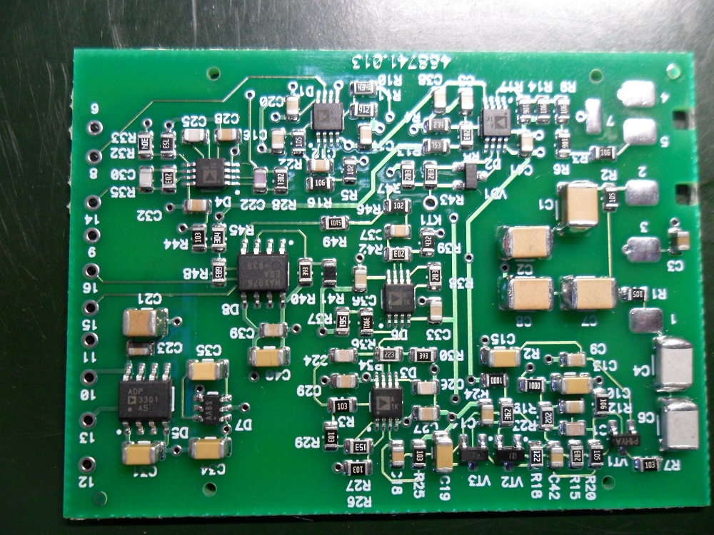
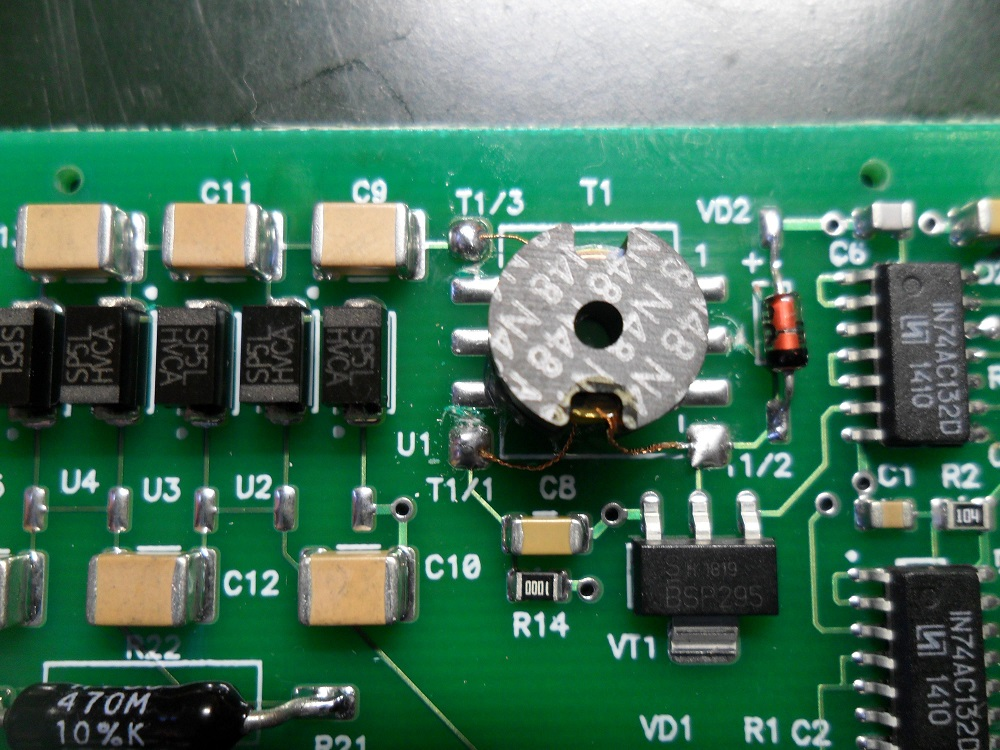
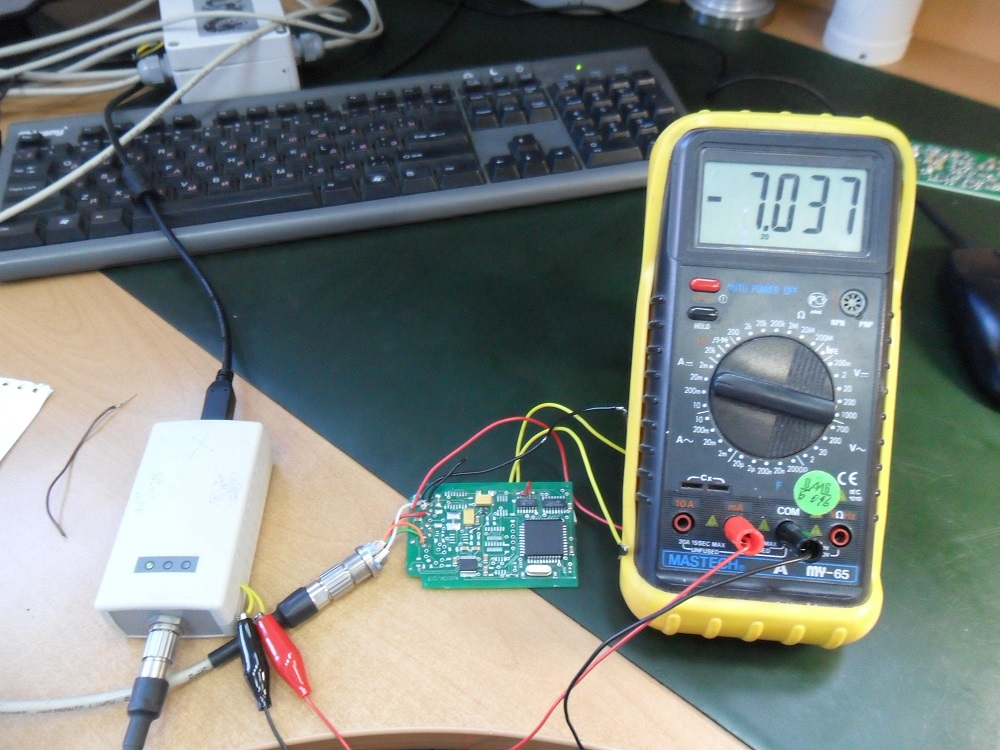
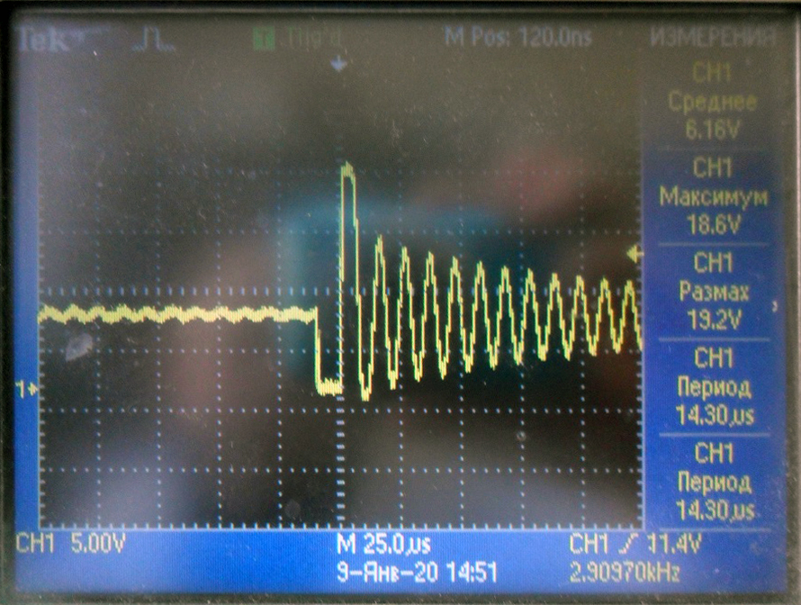
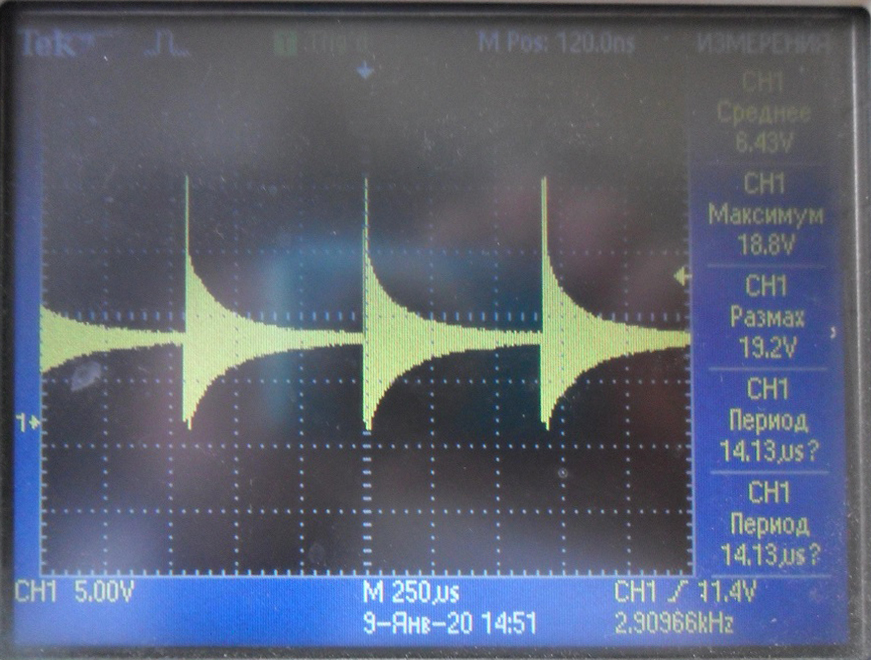
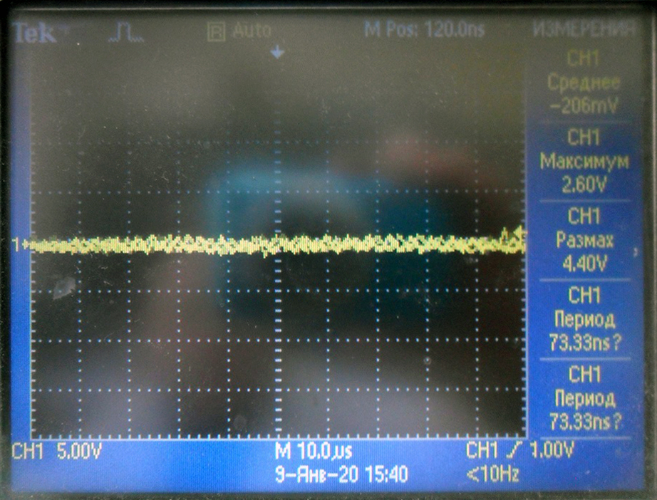
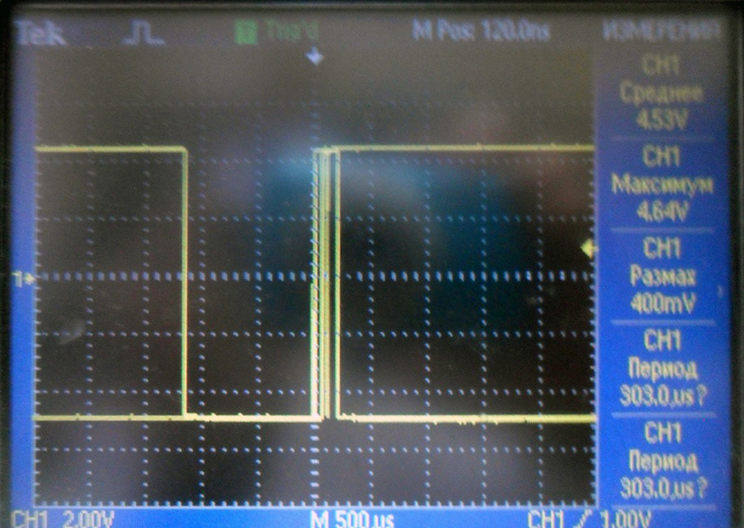

БДКН-01/03. Проверка плат
- Получить платы
- Произвести визуальный осмотр, обратить внимание на припайку элементов, на плате преобразователя импульсов на
правильность запайки операционных усилителей (совпадение ключей)

- на плате преобразователя напряжения произвести доработку - обрезать токопроводящие дорожки , идущие к
контактным площадкам (2,4,6) трансформатора Т1

- Берем usb-com адаптер с разрывом цепи питания, для контроля тока потребления используем мультиметр на 200мА.
Собираем схему:

- Берем плату для проверки плат БДКН. Запоминаем ток потребления (около 7,2мА)
выходящие провода с платы:
- черный - земля
- красный - 5В (6В)
- желтый - 3.3В
- подключаем плату преобразователя напряжения 758723.037-6, 436121.004:
- 4 - земля
- 5 - 5В
- 3 - 3.3В
- 2 - 3.3В
- проверить потребление (~5mA), т.е амперметр должен показывать около 12мА
- Проверяем напряжение на коллекторе транзистора VT1. Должно иметь амплитуду (~15В) и форму, с периодом
~700мкс


- Подключаем плату преобразователя импульсов 758723.038-7; 468741.013:
- 9 - Земля
- 11 - +3,3В
- 10 - +5В
- Проверить ток потребления. Должен быть около 9,4мА т.е амперметр должен показывать около 16мА.
Проверяем напряжения в точках. Удобнее использовать осциллограф:
| Точка |
Напряжение |
| D7.1 |
-5В |
| D7.2 |
+5В |
| D8.3 |
1,8В |
| D6.7 |
0,085В |
| D1.7 |
-4,76В |
| D2.3 |
+2,43В |
| VT3-C18 |
-2,66В |
| R15-VT2 |
0,45В |
В точке D6.7 форма сигнала имеет вид:

- Поставить щуп осциллографа в точку 8. должно быть -4,7В. Подать +5В с точки 13 на площадку №3 (дотронуться)
Напряжение в точке изменится на противоположенное, а потом должно вернуться через ~12сек
- Поставить щуп осциллографа в точку 6. должно быть +5В. Подать +5В с точки 13 на резисторы R9,R14 должны
пойти счетные импульсы.

- Подключаем плату обработки 758723.036-8; 468154.017:
- Проверяем ток потребления. Должен быть около 5,8мА